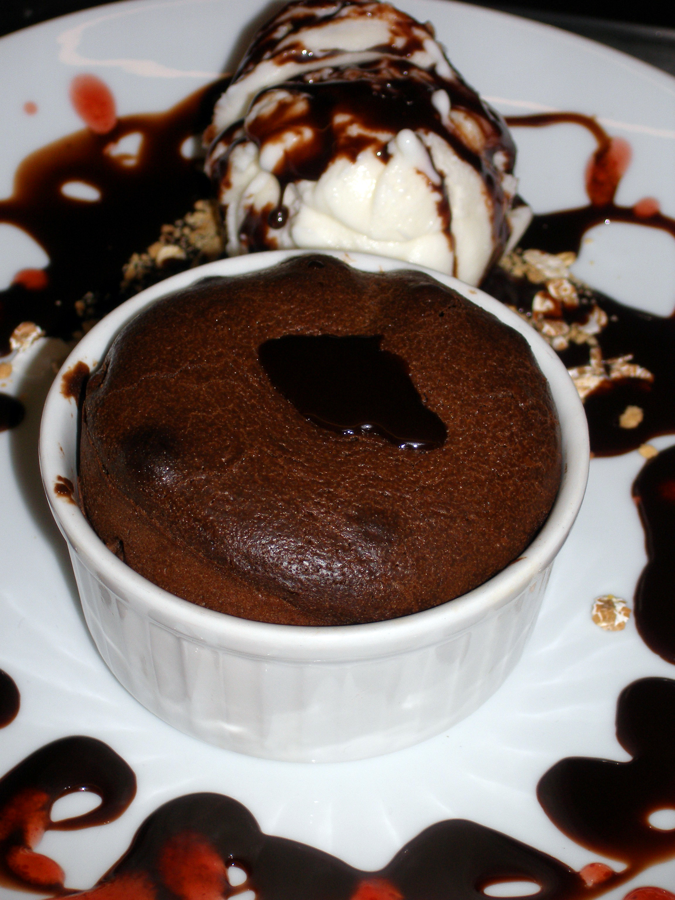

סופלה שוקולד
שבת בלי סופלה היא לא אותה שבת!!!
קל במיוחד להכנה והתוצאה מרשימה,
נסו את
המתכון
וספרו לנו בתגובות איך יצא.
בהצלחה😊

מעט על המתכון:
סופלה שוקולד מהיר ומושלם!
את הסופלה הזה גיליתי אחרי המון ניסיונות במטבח, עד שהגעתי לדיוק הצרפתי המושלם שכולם כל כך אוהבים.
זה המתכון הכי מבוקש אצלי בבית – כזה שאני אוהבת להכין בעיקר בסופ"ש, בחגים, או כשסתם בא לפנק את הילדים והאורחים במשהו חם וטעים.
מעל 2000 הכינו ואהבו👍
מצרכים:
- שוקולד
- 100 גרם שוקולד מריר
- 3-4 קוביות שוקולד (למילוי)
- 50 גרם חמאה (לפרווה-מחמאה/מרגרינה)
- 4 כפות (70 גר') גדושות סוכר
- קמצוץ מלח
- חצי כוס (70 גר') קמח תופח
- 2 ביצים
אופן ההכנה:
- מחממים תנור מראש ל180 מעלות (חשוב שהתנור יהיה חם!)
- ממיסים במיקרוגל את קוביות השוקולד המריר עם החמאה ומערבבים לתערובת שוקולדית חלקה (מומלץ להשתמש בקערה יחסית גדולה שתכיל את כל החומרים).
- מוסיפים סוכר וקמצוץ מלח ומערבבים. מוסיפים קמח ומערבבים. מוסיפים ביצה אחת ומערבבים, ביצה שניה ומערבבים.
- משמנים כוס או תבנית שקעים ויוצקים את התערובת לגובה שני שליש. מטמינים בכל שקע קוביית שוקולד.
- מכניסים לתנור ואופים במשך 10-12 דקות, עד שהצדדים אפויים, בפנים נוזלי ומלמעלה יש קרום אפוי (כדאי להשתמש בסטופר שכן אפית יתר תהפוך את הסופלה למרקם עוגתי יבש ולא נוזלי מבפנים).
- והנה הסופלה שלנו מוכן, בתיאבון💕

נתוני המתכון:
| שלב | פעולה | הערות ודגשים |
|---|---|---|
| 1. | הכנת התנור ובסיס השוקולד | מחממים תנור ל-180 מעלות. ממיסים שוקולד מריר וחמאה בקערה גדולה עד לקבלת תערובת חלקה. |
| 2. | ערבוב המרכיבים | להוסיף סוכר, מלח וקמח. לאחר מכן להוסיף את הביצים בהדרגה (אחת-אחת). |
| 3. | מילוי הכלים והטמנת שוקולד | יוצקים את התערובת עד לגובה 2/3 מהכלי, מטמינים קוביית שוקולד במרכז, ומקפידים על זמני אפייה מדויקים. |
| 4. | אפייה בתנור | |
| זמני באפיה: | 10-12 דקות בלבד (אפיית יתר תייבש את הסופלה). | |
| סה"כ המתכון מספיק ל 4-5 מנות. | ||
טיפים:
- יש לשים לב לזמני האפיה כדי שהסופלה לא יתייבש.
- מומלץ להגיש מייד בסיום האפיה.
✨הצעת הגשה שווה במיוחד✨